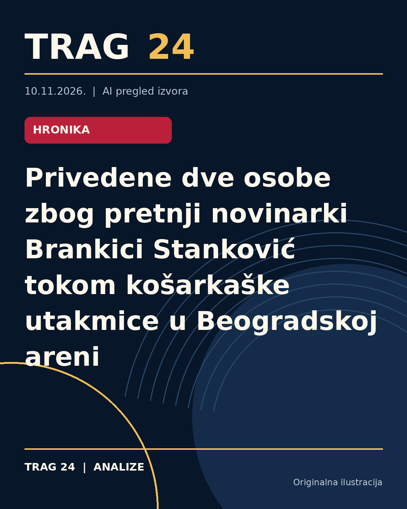

Privedene dve osobe zbog pretnji novinarki Brankici Stanković tokom košarkaške utakmice u Beogradskoj areni

ŠTA SE DOGODILO
Tokom košarkaške utakmice između Partizana i Olimpija Cedevite održane 6. juna 2023. godine u Beogradskoj areni, pet osoba je osumnjičeno za krivično delo ugrožavanja sigurnosti novinarke Brankice Stanković. Osumnjičeni su tokom utakmice skandirali pesme uvredljivog i pretećeg sadržaja upućene novinarki, čime je, prema navodima, ugrožena njena bezbednost.
HRONOLOGIJA
Treće osnovno javno tužilaštvo u Beogradu naložilo je policiji da identifikuje i zadrži osumnjičene. Dve osobe, D.M. (rođ. 2000) i R.R. (rođ. 1986), su zadržane i biće saslušane pred tužilaštvom 12. novembra 2026. godine. Za preostalim trojicom osumnjičenih, S.S. (1992), O.I. (1999) i A.N. (1999), raspisana je potraga jer se nalaze u bekstvu. Policija je naredila da se pojačaju napori u njihovom pronalaženju. Sve radnje vode Treće osnovno javno tužilaštvo u Beogradu.
ŠTA NAVODE IZVORI
Sva tri izvora navode iste ključne činjenice – da je sporne događaje istraživalo i procesuiralo Treće osnovno javno tužilaštvo u Beogradu, da su osumnjičene u vezi sa skandiranjem uvredljivih i pretećih pesama tokom utakmice, te da su dve osobe privedene, dok se za trojicom nalazi u bekstvu. Takođe, potvrđuju datum utakmice (6. jun 2023) i mesto događaja (Beogradska arena).
ŠTA JE POTVRĐENO
Potvrđeno je da je pet osoba osumnjičeno za ugrožavanje sigurnosti novinarke Brankice Stanković, da su tokom utakmice skandirali pesme koje se ocenjuju kao uvredljive i preteće, da su dve osobe zadržane i da se za tri traga. Optužbe se odnose na član 138. stav 3. Krivičnog zakonika. Takođe, potvrđeno je da je planirano saslušanje zadržanih 12. novembra 2026. godine i da Policijska uprava za grad Beograd preduzima aktivnosti u cilju pronalaženja i privodjenja ostalih osumnjičenih.
ŠTA NIJE POTVRĐENO
Iz dostupnih izvora nije potvrđeno kakav je tačno sadržaj pesama koje su skandirane, niti postoji informacije o eventualnoj raspravi ili stavu optuženih. Nisu dostupni detalji o daljem toku istrage ili o mogućim merama koje bi tužilaštvo moglo preduzeti prema osumnjičenima. Takođe, nema informacija o reakcijama novinarke Brankice Stanković ili drugih zvaničnih lica na predmetne događaje.
ŠTA OSTАJE OTVORENO: Ostaje nejasno kada će i da li će ostali osumnjičeni biti pronađeni i privedeni, kao i kakve će biti daljnje pravne posledice po okončanju saslušanja i istrage. Takođe, nije poznato da li će biti preduzete dodatne mere za zaštitu novinarke i bezbednost na sportskim događajima u budućnosti.
Izvori
- https://www.danas.rs/vesti/drustvo/uhapseni-zbog-pretnji-brankici-stankovic/
- https://www.telegraf.rs/vesti/hronika/4430699-uhapsena-grupa-navijaca-zbog-pretnji-brankici-stankovic
- https://nova.rs/vesti/hronika/zadrzavanje-osumnjicenih-zbog-ugrozavanja-bezbednosti/
Ova analiza je pripremljena uz pomoć veštačke inteligencije na osnovu javno dostupnih izvora. Navodi izvora nisu nužno nezavisno potvrđeni.